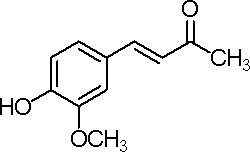
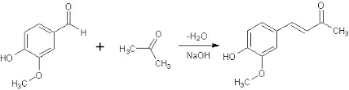
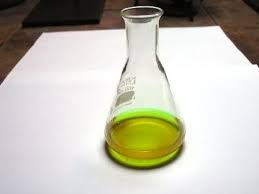
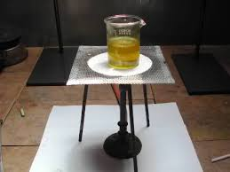
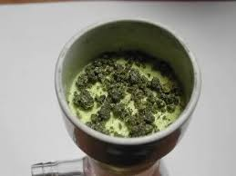
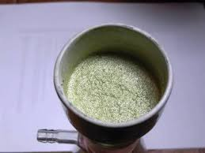
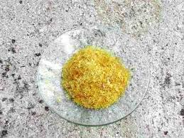

Il nome altisonante di questa sintesi non rende giustizia alla sua discreta semplicità; è una sintesi carina e di soddisfazione nei risultati, anche se alla fine c'è "un'inezia" che personalmente avrei preferito non ci fosse: il doppio legame nella molecola!
Sì, perchè proprio questo differenzia il prodotto che andremo a preparare dallo zingerone, la sostanza che dà l'aroma allo zenzero, e come si sa io ho un debole per le molecole odorose.

Si tratta di una condensazione aldolica (ved. altrove), simile a quella presentata tempo addietro tra l'acetone e la benzaldeide per la sintesi del dibenzalacetone.
Lavorando stavolta in eccesso di chetone la condensazione con l'aldeide avviene da un solo lato del chetone stesso, e quindi, mettendoci a cavallo del carbonile -CO-, la molecola sarà asimmetrica.
In questo caso come aldeide è stata scelta l'odorosa vanillina (4-idrossi-3-mettossibenzaldeide), quella polverina bianca che la nonna metteva e mette nelle torte, mentre il chetone è sempre quel solvente che la sorella usa (usava) per togliersi lo smalto dalle unghie, cioè l'acetone.
Tutta roba semplice quindi, che potremmo trovare perfino al supermercato.
(Magari! Non credeteci... l'acetone puro chi lo trova più al supermercato? E attenti: scommetto un set completo di beute nuove che fra poco perfino la vanillina sarà considerata tossica e fuorilegge.
Fuorilegge e introvabile come mille altre cose e diecimila idiozie correlate, che se ci penso mi viene l'orticaria!).

Materiale occorrente:
- Vanillina
- Acetone
- Sodio idrossido
- Acido cloridrico
- Etanolo
In una beuta da 150 ml sciogliere 2,5 g di vanillina in 10 ml di acetone e preparare a parte una soluzione di 1 g di NaOH in 10 ml di acqua.
Aggiungere questa soluzione alcalina a quella di vanillina; inizia subito la reazione di condensazione tra l'aldeide ed il chetone e la soluzione assume una colorazione gialla.

Dopo qualche minuto, se non si agita, si nota la formazione sul fondo di liquido rosso che si separa ma che si ridiscioglie semplicemente agitando.
Porre la beuta su agitatore magnetico e lasciarvela per mezza giornata e ripetere l'operazione il giorno seguente; la colorazione del liquido diventa via via più rossa, fino a molto scuro dopo molte ore.

Alla fine aggiungere 50 ml di acido cloridrico al 10% e continuare ad agitare per circa un quarto d'ora.
In seguito al mescolamento acido la soluzione intorbidisce sempre più fino al formarsi di una sospensione; sul fondo saranno dei granuletti più scuri, che vanno decantati, lavati e raccolti a parte.

Il solido filtrato si presenta microcristallino e di color verdino pallido.

A questo punto dare una lavatina con acqua, asciugare fin che si può per aspirazione d'aria e predisporre il solido per la purificazione per cristallizzazione.
Ho provato vari metodi di cristallizzazione da etanolo/acqua in varie percentuali ed alla fine quello che mi ha più soddisfatto è il seguente: in un becker da 100 ml sciogliere il prodotto in 50 ml di acqua molto calda, aggiungendovi a piccole porzioni qualche ml di etanolo fino ad ottenere una soluzione perfettamente limpida all'ebollizione.
Coprire il becher con vetrino d'orologio e lasciar raffreddare lentamente ed in riposo per qualche ora, fino a cristallizzazione completa.
Dai granuletti scuri prima raccolti si può recuperare in questo modo ancora un po' di prodotto, sfiorando con una striscia di carta da filtro il liquido catramoso che affiora bollendo.
Fltrare ancora alla pompa, lavando alla fine con un po' d'acqua fredda.
Lasciando asciugare all'aria il 4-(4ì-idrossi-3'-metossifenil)-3-buten-2-one si presenta sotto forma di bei cristallini aghiformi (o anche fogliette leggere, dipende dalle modalità di cristallizzazione) di colore giallo limone, quasi inodore.

La resa è stata 1,6 g ovvero circa il 50% del teorico, non molto, avendo sacrificato del prodotto durante le fasi finali; ho misurato (due volte) il punto di fusione ed è risultato di 128°; sarebbe interessante avere un riscontro bibliografico per avere un'idea più precisa della purezza.
Ho fatto questa sintesi un paio di volte, essendo un po' impegnativa nella fase finale di purificazione e cristallizzazione, che è molto "didattica" e dove c'è da sbizzarrirsi (e perdere resa...) nella sperimentazione.
Come si potrebbe saturare quel fastidioso doppio legame e trasformare il "buten-" in "butan-" -one e sentir così l'aroma dello zenzero?
I metodi che ho trovato sono tutti largamente inacessibili (per me) perchè coinvolgono reagenti costosi che non ho alcuna intenzione di avere (saturazione con idrogeno su palladio/carbonio..., atmosfere di argon e via di questo passo...).
Mi accontento pertanto di tenermi questo chetone così com'è con la sua bella insaturazione, e lo aggiungo ai personaggi della mia compagnia delle sintesi.
2 commenti